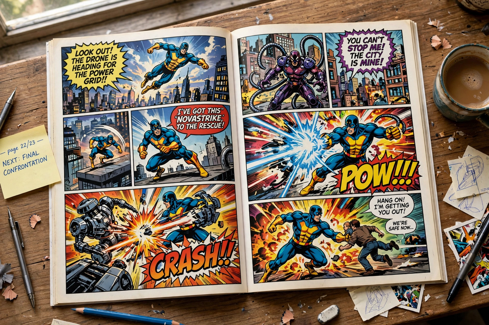

Comics
From Wikipedia, the free encyclopedia

Comics is a medium combining images in sequence — typically panels with text in speech balloons and captions — to convey narrative or information. Major traditions include the American Comic book, the Japanese Manga, and the Franco-Belgian Bande dessinée. Comics range from newspaper strips and superhero adventures to graphic novels of literary ambition such as Art Spiegelman's Maus.
History
Precursors include sequential art from Egyptian murals to the Bayeux Tapestry and Rodolphe Töpffer's picture stories (1827). Mass comics began with newspaper strips of the 1890s (The Yellow Kid) and the comic book format of the 1930s; the debut of Superman in Action Comics #1 (1938) launched the Golden Age of Comic Books and the superhero genre that still dominates the American industry through Marvel Comics and DC Comics.
Forms and industry
Post-war manga, shaped by Osamu Tezuka, became Japan's dominant popular medium across every demographic genre; European albums produced Tintin and Asterix. In the US, the 1954 Comics Code curtailed horror and crime comics; the underground comix of the 1960s–70s and the graphic-novel boom — Maus (Pulitzer Prize, 1992), Alan Moore's Watchmen, Marjane Satrapi's Persepolis — established literary comics, while digital Webcomics and webtoons transformed distribution.
Theory and recognition
Scott McCloud's Understanding Comics (1993) codified the medium's formal theory ('sequential art', closure between panels). Comics are now studied academically, collected by major libraries and adapted into the highest-grossing films of the modern era.